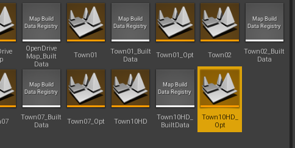
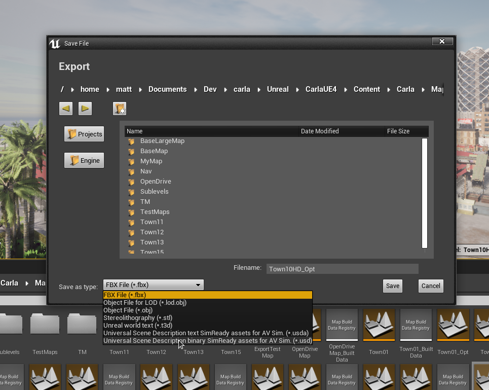
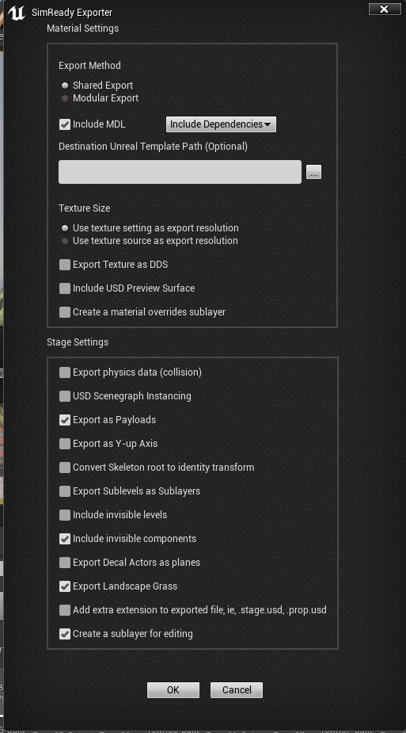
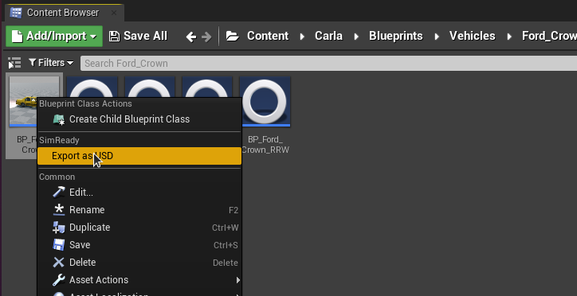
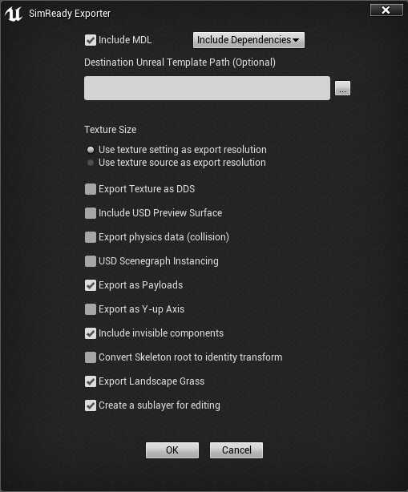

NVIDIA SimReady
SimReady 是与用于模拟的 3D 资产相关的信息和元数据的标准规范。SimReady 标准确保 3D 资产不仅是数字孪生中的高保真视觉资源，而且还具有组织良好的元数据定义，包括语义标记、密集字幕、非视觉传感器信息和物理属性。
SimReady 转换器
NVIDIA SimReady 转换器使 CARLA 资产能够以符合 SimReady 标准的方式导出为通用场景描述 （USD） 格式，从而有助于从 OmniVerse 生态系统导入到其他应用程序中，例如 Sensor RTX 或 RTX 渲染器以进行协同模拟。
SimReady转换器在可能的情况下将虚幻对象、属性和参数映射到符合 USD/SimReady 的等效项，并应用适当的元数据（例如语义标签）用于模拟目的。
使用 SimReady 转换器导出 SimReady 资产
导出地图
要导出地图，请在 CARLA 内容浏览器(content browser) 中找到相应的地图文件。例如，Content > Carla > Maps中的 Town10HD_Opt。

在内容浏览器中双击地图资产以加载它。选择File > Export All。将Save as type设置为 AV Sim 的通用场景描述二进制 SimReady 资产 (*.usd)。

选择资产的文件夹位置。单击 保存(Save) 选项后，将出现一个选项对话框。在大多数情况下，使用默认选项导出将有效。有关导出选项的更多详细信息，请参阅 SimReady 选项 部分。

导出车辆或行人
要导出车辆或行人，请找到蓝图文件。例如，Content > Carla > Blueprints > Vehicles > Ford_Crown中的 BP_Ford_Crown 或 Content > Carla > Blueprints > Walkers 中的 BP_Walker。右键单击蓝图并选择 导出为 USD(Export as USD)。

将打开一个文件浏览器，为导出的 USD 文件选择一个位置。选择 保存(Save) 后，将打开一个选项对话框。默认选项适用于大多数情况。

有关 SimReady 导出选项的更多详细信息，请参阅以下部分。
SimReady 导出选项
两个最重要的选项如下：
-
Include MDL- 选择此选项会将虚幻材质转换为 MDL 材质。确保您要导出的应用程序与 MDL 材质兼容。Omniverse Kit 应用程序与 MDL 材料兼容。 -
Include USD Preview Surface- 选择此选项会导出带有 USD 预览表面的 USD，这可确保可视化的更广泛兼容性，但材质功能集更有限。这有助于确保在不支持完整 MDL 规范的应用程序中可以正确查看资产。
下表提供了有关可用导出选项的详细信息。更多详细信息可以在 Omniverse Connect 文档中找到 点击此处 。
| 选项 | 结果 |
|---|---|
| Export Method | 共享（Shared） 组织材质，以便它们可以由许多资源共享\n模块化（Modular） 为 每个资源导出一个材质，以便资源及其材质都是独立的 |
| Include MDL | 导出 MDL 材料 |
| MDL Dependency Option | Include Dependencies - Duplicates the MDL dependencies (templates) in Destination Folder Use Core Library Dependencies - Core MDL Library templates are referenced |
| Destination Unreal Template Path | Destination Folder on Omniverse Nucleus for the MDL dependencies (templates) Note: A file must be selected, but only the folder is used |
| Texture Size | Use Texture Setting or Source as Exported Texture Size |
| Export Texture as DDS | Save DDS Files to Destination Path and reference them from materials |
| Include USD Preview Surface | Export Preview Surfaces |
| Include Unreal Materials | Export a reference to an Unreal material (note, when importing/opening the material must be available in the within the Unreal project) |
| Create a material overrides layer | Export a sublayer that contains all of the material reference overs for the stage. Also create USD files for each material rather than including them in the prop stages. |
| Export physics data | Include collision data with static meshes (not available with Unreal Engine 5.0 due to USD Schema updates) |
| Export source geometry for Nanite high-poly detailed mesh |
Brute-force export the Nanite geometry as USD geometry data. (only available with Unreal Engine 5.0, this generates a LOT of triangles) |
| USD Scenegraph Instancing | Make every referenced mesh in a stage an instance. If the stage has duplicate meshes this can greatly reduce geometric GPU memory in another renderer, but the editing workflow may be hampered. |
| Export as Payloads | Use Payloads instead of References in the stage |
| Export as Y-up axis | If checked, USD and MDL are exported with a Y-up stage up-axis rather than the default Z-up |
| Export Sublevels as Sublayers | If checked, levels are exported as USD sublayers and referenced in the root stage |
| Convert Skeleton root to identity transform | This option will convert a Skeleton’s root node to an identity transform to assist downstream tools that require this. All animations exported during this export will be transformed properly so they’ll work in downstream tools. |
| Include invisible levels | If checked, levels that are hidden will be included in the export and marked as invisible |
| Export Decal Actors as planes | If checked, decal actors are exported as “floating” plane meshes offset from their base mesh |
| Add extra extension to exports | Stage files will be named .stage.usd, props will be named .prop.usd |
| Checkpoint Comment (Optional) | Set the checkpoint comment on the Nucleus server for each exported file |
语义标签和 Q代码
SimReady 标准使用 Q 代码 进行语义标记。Q 代码是三个字母代码的标准化集合，这些代码都以字母 Q 开头。SimReady 导出器为从 CARLA 导出的每个语义标记项应用适当的 Q 代码，作为 USD 文件中对象元数据的一部分。您可以在 维基数据网站 上查找 Q 代码定义。
下表显示了 CARLA 语义类到 Q 代码的映射：
| Label | Q-code |
|---|---|
| Road | Q34442 |
| SideWalk | Q177749 |
| Building | Q41176 |
| Wall | Q42948 |
| Fence | Q148571 |
| Pole | Q2180428 |
| TrafficLight | Q8004 |
| TrafficSign | Q170285 |
| Vegetation | Q187997 |
| Terrain | Q186131 |
| Sky | Q527 |
| Pedestrian | Q221488 |
| Rider | Q11998775 |
| Car | Q1420 |
| Truck | Q43193 |
| Bus | Q5638 |
| Train | Q870 |
| Motorcycle | Q34493 |
| Bicycle | Q11442 |
| Static | Q2302426 |
| Dynamic | Q2302426 |
| Other | Q55107540 |
| Water | Q283 |
| RoadLine | Q1392287 |
| Ground | Q36133 |
| Bridge | Q12280 |
| RailTrack | Q57498564 |
| GuardRail | Q1188866 |